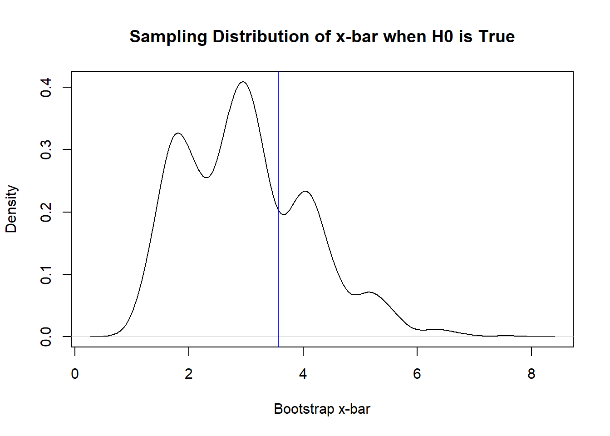

16 The Bootstrap in Hypothesis Testing and Randomization Test
16.1 Introduction
The hypothesis tests for the means in Section 14 are based on certain conditions being met, so that test statistics can be calculated based on known sampling distributions. What happens if these conditions are not met? Using the test statistics from Section 14 will be unreliable (generally). Similar to confidence intervals, we can use ideas associated with the bootstrap to conduct a hypothesis test when the sampling distribution of a test statistic is unknown.
We will also learn about the randomization test, which uses the bootstrap when testing the difference between two independent populations.
16.2 Bootstrap in Hypothesis Testing
The steps are:
- Write the null and alternative hypotheses.
- Compute \(\hat{\theta}\), the value of the test statistic in the original sample.
- Synthesize \(K\) bootstrap samples.
- For each bootstrap sample, calculate the value of the estimator \(\hat{\Theta}\). Since we have \(K\) bootstrapped datasets, we will have \(K\) values for the estimators, denoted by \(\hat{\Theta}^{(1)}, \cdots, \hat{\Theta}^{(K)}\).
- We estimate the expected value of \(\hat{\Theta}\) by taking the sample mean of \(\hat{\Theta}^{(1)}, \cdots, \hat{\Theta}^{(K)}\). This value is denoted by \(M_b(\hat{\Theta})\).
- Build the sampling distribution of the statistic assuming the null hypothesis is true. This is done by \((\hat{\Theta}^{(1)}, \cdots, \hat{\Theta}^{(K)}) - M_b(\hat{\Theta}) + \mu_0\). This computes the bootstrap test statistic from each bootstrap sample.
- Find the p-value, which is the proportion of bootstrap test statistics that are as extreme, or more extreme, than \(\hat{\theta}\). Note: for a two sided test, find the proportion of the bootstrap test statistics with absolute value equal to or greater than the absolute value of \(\hat{\theta}\), as well as the proportion of the bootstrap test statistics with absolute value equal to or less than the absolute value of \(\hat{\theta}\). Then multiply the smaller proportion by 2.
16.2.1 Worked Example
Scenario: Suppose that for budget purposes we are only able to draw a sample of 7 from the unknown population distribution. We wish to test if the mean of the unknown population is greater than 3. In this case, bootstrapping can be used to estimate the sampling distribution of the test statistic under the null hypothesis. We note that the sample size is likely to be too small to use the Central Limit Theorem.
The hypotheses are \(H_0: \mu = 3, H_a: \mu > 3\).
samp_data <- c(1.77, 10.48, 4.30, 0.96, 2.67, 2.76, 2.02)
## step 2
samp_mean <- mean(samp_data)
## step 3
Reps <- 10000
set.seed(7)
boot_samples <- replicate(Reps, sample(samp_data, replace=T))
## step 4
boot_means <- apply(boot_samples, 2, mean)
## steps 5, 6
mu0 <- 3
boot_means_null <- boot_means - mean(boot_means) + mu0
## step 7
mean(boot_means_null >= samp_mean)## [1] 0.2873So the p-value is 0.2876, so we fail to reject the null hypothesis. The data do not support the claim that the average is greater than 3.
Figure 16.1 below visualizes the sampling distirubtion of \(\bar{X}\) assuming that the mean is truly 3. A blue line is overlaid to show the sample mean in the original data. The p-value is found by finding the proportion of bootstrap test statistics that are to the right of the blue line.
plot(density(boot_means_null),
main = "Sampling Distribution of x-bar when H0 is True",
xlab = "Bootstrap x-bar")
abline(v = samp_mean, col = "blue")
Figure 16.1: Sampling Distribution of Sample Mean when Null is True
16.3 Randomization Test
For a hypothesis test that compares a parameter between two independent populations, the randomization test is preferred. It uses the bootstrap with some tweaks. The steps are:
- Write the null and alternative hypotheses.
- Compute the value of the statistic (usually difference in means or difference in proportions) in the original sample.
- Combine the two samples into one sample.
- Reassign the observations in the combined sample into two pseudo groups with the same sample size as the original two samples.
- Compute the value of the statistic based on the two pseudo groups.
- Repeat steps 4 and 5 a large number of times. This would build the sampling distribution.
- Find the p-value, which is the proportion of pseudo groups with statistics that are as extreme, or more extreme, than the value of the statistic in the original samples. Note: for a two sided test, find the proportion of the pseudo group statistics with absolute value equal to or greater than the absolute value of the statistic in the original samples.
16.3.1 Worked Example
This is a continuation of the worked example in Section 16.2.1.
Suppose that we would like to use the sample of 7 observations from the unknown population and a second sample of 8 observations from another unknown population to test if the means of the two unknown populations are the same. We use the randomization test here.
The hypotheses are \(H_0: \mu_1 - \mu_2 = 0, H_a: \mu_1 - \mu_2 \neq 0\).
## Draw the second sample and calculate its sample mean
samp_data2 <- c(4.68, 4.83, 4.29, 1.42, 7.81, 5.20, 3.97, 1.59)
samp_mean2 <- mean(samp_data2)
## Step 2
samp_diff <- samp_mean - samp_mean2
## write rand.test() which combines steps 3, 4, 5
rand.test <- function(x){
rand_comb <- sample( c(samp_data, samp_data2) )
bmean1 <- mean(rand_comb[1:x])
bmean2 <- mean(rand_comb[(x+1):(length(samp_data)+length(samp_data2))])
bmean1 - bmean2
}
## step 6
boot_diffs_null <- replicate(Reps, rand.test(length(samp_data)))
## step 7
mean(abs(boot_diffs_null) >= abs(samp_diff)) ## [1] 0.6548So the p-value is large, so we fail to reject the null hypothesis. The data do not support the claim that there is a difference in the means in the 2 populations.